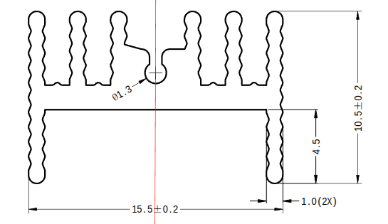
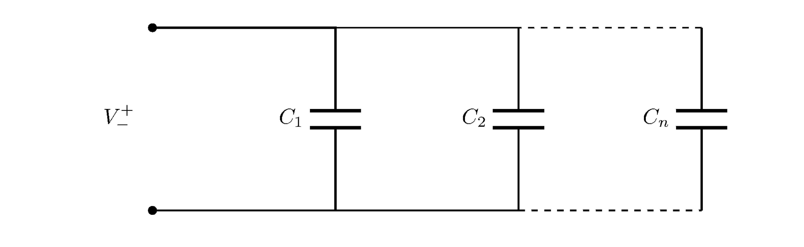

using N-MOSFET set up gate voltage to setup current through MOSFET (see \(I_d\) vs \(V_{gs}\)). The \(V_g\) is driven by OpAmp based on \(V_s\) through power resistor (shunt) voltage and reference voltage \(V_{ref}\).
BASIC ASSUMPTIONS
It is impossible? to have one MOSFET going full up to 3.5A and in the same time stay precise in low range of curents. - modular approach: 4 modules - three IXTP4N65X2 MOSFETS for 0.4A to 1A - one precise STF2N95K5 for 0 to 0.5A - maximum total \(V_{in}\)=24V and \(I_{in}\)=3.5A - minimum \(V_{in}\)=1V and \(I_{in}\)=0.10mA - \(V_{ref}\) will be set with potentiometer, each mosfet separately - can be one common display - interface for current sensing on low side - device power from external supply: main 220V AC
THERMAL DISSIPATION
xsd1226-005

Code
displayformat include_comment truedisplayformat matrix textpkgload symbolicwarning('off','all');# THERMAL RESISTANCE## POWER MOSFET# SPP02N60C3-VB## inputV_in=24# [V]I_in=1#[A]### total power to dissipateP_tot = V_in*I_in #[W]## heat sink XSD1226-039# estimated, based on `same-sky` datasheet# at 75degC for aluminum# 1. natural convection# 2. at 200LFM# 3. at 400LFMK=[1000400250] #[degC * cm^2 / W]A=94.61#[cm^2]Rths= K/A #[degC/W] sink to ambient## TO-220 packageRthj=1.56#[degC/W] junction to case## total thermal resistanceRth =Rthj+Rths## max temp raise above ambientT = Rth*P_tot #[degC] ## max junction temperatureTj=150#[degC]
# THERMAL RESISTANCE
# POWER MOSFET
# SPP02N60C3-VB
# input
V_in = 24 # [V]
I_in = 1 #[A]
# total power to dissipate
P_tot = 24 #[W]
# heat sink XSD1226-039
# estimated, based on `same-sky` datasheet
# at 75degC for aluminum
# 1. natural convection
# 2. at 200LFM
# 3. at 400LFM
K = 1000 400 250 #[degC * cm^2 / W]
A = 94.610 #[cm^2]
Rths = 10.5697 4.2279 2.6424 #[degC/W] sink to ambient
Cgs=Ciss-Crss # [pF] gate conductance##inductance of PCB trace (1.2mm PCB thk, 0.5mm trace)L=10e-9# [nH/cm]L_g=2*L # assume 2cmL_s=1*L # assume 1cm##Reach max gate voltage in t_rise[ms]t_rise=1e-3#[sec]f=1/(4*t_rise) # [Hz]##current needed to drive the gateIg=(Cgs*1e-12* (Vgs/t_rise))*10e3#[mA]# with gate resistance we already haveVgs/Rg #[A]##RLC oscilator [MHz]w=1/sqrt((L_g+L_s)*Ciss*1e-12) *10e-6#unlikely to induce this freq, but let's keep it dumpedRg_add=50zeta=Rg_add/(2*(sqrt(Cgs*1e-12/(L_s+L_g))))
Cgs = 454.20 # [pF] gate conductance
#inductance of PCB trace (1.2mm PCB thk, 0.5mm trace)
L = 1.0000e-08 # [nH/cm]
L_g = 2.0000e-08 # assume 2cm
L_s = 1.0000e-08 # assume 1cm
#Reach max gate voltage in t_rise[ms]
t_rise = 1.0000e-03 #[sec]
f = 250 # [Hz]
#current needed to drive the gate
Ig = 0.019076 #[mA]
# with gate resistance we already have
ans = 0.3231 #[A]
#RLC oscilator [MHz]
w = 2706.7
#unlikely to induce this freq, but let's keep it dumped
Rg_add = 50
zeta = 203.18
reference voltage set
Code
graphics_toolkit plotlydisplayformat plotly_interactive_legend truedisplayformat include_comment truesyms Vm_s R_2 R_3 Rset_s;Vcc=10# [V]# first we need to drop voltage to ~VsenseVsense = I_in*RsenseRpot_in=1e3R1_in=1e6Rset_in=Rpot_in*0.5Vin=Vcc*(Rset_in/((Rpot_in-Rset_in+R1_in)+Rset_in)) # [V] input voltage for divider## voltage dividerRpot=20e3;Io=linspace(0,I_in,15);Vm=Io*Rsense;Rset_s = solve((Rset_s / ((Rpot-Rset_s) + Rset_s))*Vin==Vm_s,Rset_s)Rset=subs(Rset_s,{Vm_s},{Vm});plot(double(Rset),Io)xlabel("potentiometer")ylabel("current")ylim([0,max(Io)])double(max(Rset))
warning: your version of GraphicsMagick limits images to 8 bits per pixel

Code
function Ceq = Cseries(Cvec)usage= {"Cseries([1 2 3, ...])"};ifnargin==0disp("Usage:\n")disp(usage)error("Cseries: no input");endif!isvector(Cvec)error("Cseries: input must be a vector");endCeq=0;fori=1:length(Cvec) Ceq = Ceq +1/ Cvec(i);endCeq =1/ Ceq;end
capacitor charging
$ I(t) = C $
or
$ = C $
Code
displayformat include_comment truepkgload symbolicwarning('off','all');syms Vcap(t) Vm(t) C% starting circuit% charging cap through R1 and R2R1=10e3;R2=10e3;R3=10e3# aaVin=10;C1=27e-9;% keep C as symbol, other way the kernel strugle% with typically very small values of C% capacitor charging equationcap = (Vin - Vcap(t))/(R1 + R2) == C *diff(Vcap, t);Vcap(t,C) = dsolve(cap, Vcap(0)==0)% current to capIcap(t,C) = (Vin - Vcap(t,C)) / (R1 + R2)% mosfet voltage; Vg for p-mosfet and Vd for n-mosfetVm(t,C) = Vin - R1 * Icap(t,C)% fully charged aftertfull=double(solve(Vcap(t,C1)==0.95* Vin, t))*1e3#[ms]
% starting circuit
% charging cap through R1 and R2
R3 = 10000 # aa
% keep C as symbol, other way the kernel strugle
% with typically very small values of C
% capacitor charging equation
% mosfet voltage; Vg for p-mosfet and Vd for n-mosfet
\[Vm(t, C)=10 - 5 e^{- \frac{t}{20000 C}}\]
% fully charged after
tfull = 1.6177 #[ms]
Code
syms Vcap_d(t)% turning on% discharging cap through R3% cap must sustain Vth for time enough to turn on n-mosfettnon=12e-6% capacitor discharging equationcap_d = (Vcap_d(t) / R3) ==-C *diff(Vcap_d, t);Vcap_d(t) = dsolve(cap_d,Vcap_d(0)==Vin)% voltge drop when n-mosfet turning ondouble(Vcap_d(tnon)) # must be above Vth=1
Execution exception: 'syms' undefined near line 1, column 1
The 'syms' function belongs to the symbolic package from Octave Forge
which you have installed, but not loaded. To load the package, type
‘pkg load symbolic’ from the Octave prompt.
Execution exception: 'syms' undefined near line 1, column 1
The 'syms' function belongs to the symbolic package from Octave Forge
which you have installed, but not loaded. To load the package, type
‘pkg load symbolic’ from the Octave prompt.
error: called from
cell[1] at line 1 column 1
Code
syms Vcap_c(t)% turn off% cap charging current through R3 % cap must drain enough current do drop beloow Vth % for time enough to turn on n-mosfettnoff=13e-6R3=10e3#% capacitor charging equationcap_c = (Vin - Vcap_c(t)) / R3 == C *diff(Vcap_c, t);Vcap_c(t) = dsolve(cap_c, Vcap_c(0)==0)% voltge drop through R3 when n-mosfet turning offdouble(Vcap_c(tnoff)) # must be below Vth=1V
Code
% n-mosfet powerRdson =0.046In = Vin / (R1 + Rdson)Pn = In^2* Rdson% p-mosfet max powerPp = Vin *100e-3# max current from LDOVin *5e-3*24
ERROR: received bad message: No such comm registered: a3fc237c-6518-4bbe-8115-f712b86787f9
Message type: comm_msg
Code
dsolve(cap, Vcap(0)==0)
Code
"displayformat include_comment true\npkg load symbolic\nwarning('off', 'all');\n\nsyms Vcap(t) Vm(t) C\n% starting circuit\n% charging cap through R1 and R2\nR1=10e3;\nR2=10e3;\nR3=10e3;\nVin=10;\nC1=27e-9;\n% capacitor charging equation\ncap = (Vin - Vcap(t))/(R1 + R2) == C * diff(Vcap, t);\nVcap(t,C) = dsolve(cap, Vcap(0)==0)\n% current to cap\nIcap(t,C) = (Vin - Vcap(t,C)) / (R1 + R2)\n% mosfet voltage; Vg for p-mosfet and Vd for n-mosfet\nVm(t,C) = Vin - R1 * Icap(t,C)\n% fully charged after\ntfull=double(solve(Vcap(t,C1)==0.95 * Vin, t))*1e3 #[ms]\nsyms Vcap_d(t)\n% turning on\n% discharging cap through R3\n% cap must sustain Vth for time enough to turn on n-mosfet\ntnon=12e-6\n\n% capacitor discharging equation\ncap_d = (Vcap_d(t) / R3) == -C * diff(Vcap_d, t);\nVcap_d(t) = dsolve(cap_d,Vcap_d(0)==Vin)\n% voltge drop when n-mosfet turning on\ndouble(Vcap_d(tnon)) # must be above Vth=1\nsyms Vcap_c(t)\n% turn off\n% cap charging current through R3 \n% cap must drain enough current do drop beloow Vth \n% for time enough to turn on n-mosfet\ntnoff=13e-6\nR3=10e3\n#\n% capacitor charging equation\ncap_c = (Vin - Vcap_c(t)) / R3 == C * diff(Vcap_c, t);\nVcap_c(t) = dsolve(cap_c, Vcap_c(0)==0)\n\n% voltge drop through R3 when n-mosfet turning off\ndouble(Vcap_c(tnoff)) # must be below Vth=1V\n\n% n-mosfet power\nRdson = 0.046\nIn = Vin / (R1 + Rdson)\nPn = In^2 * Rdson\n\n% p-mosfet max power\nPp = Vin * 100e-3 # max current from LDO\n\nVin * 5e-3 * 24% LED switch\nIf = 20e-3\nRled = Vin / Ifdisplayformat include_comment true\npkg load symbolic\nwarning('off', 'all');\n\nsyms Vcap(t) Vm(t)\n% starting circuit\n% charging cap through R1 and R2\nR1=10e3;\nR3=10e3;\nVin=10;\nC=27e-6;\n% capacitor charging equation\ncap = (Vin - Vcap(t))/(R1 + R2) == C*1e-3 * diff(Vcap, t)\n% Vcap(t) = dsolve(cap, Vcap(0)==0)\nVcap(t) = dsolve(cap, Vcap(0)==0)displayformat include_comment true\npkg load symbolic\nwarning('off', 'all');\n\nsyms Vcap(t) Vm(t) C\nVin=10\nR1=10e3\nC1=27e-9\ntnoff=13e-6\ncap = (Vin - Vcap(t)) / R1 == C * diff(Vcap, t);\nVcap(t,C)=dsolve(cap,Vcap(0)==0)\n\ndouble(Vcap(tnoff,C1))dsolve(cap, Vcap(0)==0)\nplot"
ERROR: received bad message: No such comm registered: 26461f69-37a7-4c7e-921a-641da75d7b47
Message type: comm_msg
ERROR: received bad message: No such comm registered: 77fbf533-c225-4234-af9a-8c209a945452
Message type: comm_msg
Code
"displayformat include_comment true\npkg load symbolic\nwarning('off', 'all');\n\nsyms Vcap(t) Vm(t) C\n% starting circuit\n% charging cap through R1 and R2\nR1=10e3;\nR2=10e3;\nR3=10e3;\nVin=10;\nC1=27e-9;\n% capacitor charging equation\ncap = (Vin - Vcap(t))/(R1 + R2) == C * diff(Vcap, t);\nVcap(t,C) = dsolve(cap, Vcap(0)==0)\n% current to cap\nIcap(t,C) = (Vin - Vcap(t,C)) / (R1 + R2)\n% mosfet voltage; Vg for p-mosfet and Vd for n-mosfet\nVm(t,C) = Vin - R1 * Icap(t,C)\n% fully charged after\ntfull=double(solve(Vcap(t,C1)==0.95 * Vin, t))*1e3 #[ms]\nsyms Vcap_d(t)\n% turning on\n% discharging cap through R3\n% cap must sustain Vth for time enough to turn on n-mosfet\ntnon=12e-6\n\n% capacitor discharging equation\ncap_d = (Vcap_d(t) / R3) == -C * diff(Vcap_d, t);\nVcap_d(t) = dsolve(cap_d,Vcap_d(0)==Vin)\n% voltge drop when n-mosfet turning on\ndouble(Vcap_d(tnon)) # must be above Vth=1\nsyms Vcap_c(t)\n% turn off\n% cap charging current through R3 \n% cap must drain enough current do drop beloow Vth \n% for time enough to turn on n-mosfet\ntnoff=13e-6\nR3=10e3\n#\n% capacitor charging equation\ncap_c = (Vin - Vcap_c(t)) / R3 == C * diff(Vcap_c, t);\nVcap_c(t) = dsolve(cap_c, Vcap_c(0)==0)\n\n% voltge drop through R3 when n-mosfet turning off\ndouble(Vcap_c(tnoff)) # must be below Vth=1V\n\n% n-mosfet power\nRdson = 0.046\nIn = Vin / (R1 + Rdson)\nPn = In^2 * Rdson\n\n% p-mosfet max power\nPp = Vin * 100e-3 # max current from LDO\n\nVin * 5e-3 * 24% LED switch\nIf = 20e-3\nRled = Vin / Ifdisplayformat include_comment true\npkg load symbolic\nwarning('off', 'all');\n\nsyms Vcap(t) Vm(t)\n% starting circuit\n% charging cap through R1 and R2\nR1=10e3;\nR3=10e3;\nVin=10;\nC=27e-6;\n% capacitor charging equation\ncap = (Vin - Vcap(t))/(R1 + R2) == C*1e-3 * diff(Vcap, t)\n% Vcap(t) = dsolve(cap, Vcap(0)==0)\nVcap(t) = dsolve(cap, Vcap(0)==0)displayformat include_comment true\npkg load symbolic\nwarning('off', 'all');\n\nsyms Vcap(t) Vm(t) C\nVin=10\nR1=10e3\nC1=27e-9\ntnoff=13e-6\ncap = (Vin - Vcap(t)) / R1 == C * diff(Vcap, t);\nVcap(t,C)=dsolve(cap,Vcap(0)==0)\n\ndouble(Vcap(tnoff,C1))dsolve(cap, Vcap(0)==0)\nplot"
BASIC ASSUMPTIONS
It is impossible? to have one MOSFET going full up to 3.5A and in the same time stay precise in low range of curents.- modular approach: 4 modules- three IXTP4N65X2 MOSFETS for 0.4A to 1A- one precise STF2N95K5 for 0 to 0.5A- maximum total \(V_{in}\)=24V and \(I_{in}\)=3.5A- minimum \(V_{in}\)=1V and \(I_{in}\)=0.10mA- \(V_{ref}\) will be set with potentiometer, each mosfet separately- can be one common display- interface for current sensing on low side- device power from external supply: main 220V AC
Code
function tikz(circuit,res)% requires latex to be installed in system% texlive in opensuse takes 1.4GB!!!% use tinytex to install only what needed (51MB):% - standalone% - pgf% - circuitikz% - pdfcrop Usage={"tikz(\"\\draw (0,0) to[R] (2,0);\",res) // string","tikz({\"line1\", \"line2\", ...},res) // cell array""adjust `res` if strange rendering or kernel crash" };ifnargin==0disp("Usage:\n")disp(Usage)error("tikz: no input");endifnargin==1 res=100;end% Accept string OR cell arrayifiscell(circuit) body =strjoin(circuit,"\n");else body = circuit;end tex = ["\\documentclass[tikz,border=3pt]{standalone}\n"..."\\usepackage{circuitikz}\n"..."\\begin{document}\n"..."\\begin{circuitikz}\n"... body "\n"..."\\end{circuitikz}\n"..."\\end{document}\n" ]; tmp =tempname(); texfile = [tmp ".tex"]; pdffile = [tmp ".pdf"]; auxfile = [tmp ".aux"]; logfile = [tmp ".log"]; cropdfile = [tmp "_crop.pdf"]; pngbase = [tmp]; pngfile = [pngbase "-1.png"]; imgfile = [pngbase "_resize.png"]; fid =fopen(texfile,"w");fwrite(fid, tex);fclose(fid);% Compile circuitikz to pdfsystem(sprintf("pdflatex -interaction=nonstopmode -halt-on-error -output-directory %s %s > /dev/null",fileparts(texfile), texfile ));% Auto-crop PDF (tight bounding box around circuit)system(sprintf("pdfcrop --hires %s %s > /dev/null", pdffile, cropdfile ));% Convert PDF → PNGsystem(sprintf("pdftoppm -png -r 400 -mono %s %s > /dev/null", cropdfile, pngbase ));% resizesystem(sprintf("magick %s -resize %d%% -interpolate Nearest %s > /dev/null", pngfile, res,imgfile ));ifexist(imgfile,"file") img =imread(imgfile);% pdftoppm -mono is producing PNG with pixels in range [0,1]% imshow() is expecting [0,255]% or double, but double takes more memory% img = 255 * uint8(img);figure('Position', [00size(img,2) size(img,1)]);imshow(img);% colormap(gray(256));axisimage off;elseerror("tikz: rendering failed");enddelete(texfile);delete(pdffile);delete(cropdfile);delete(pngfile);delete(imgfile);delete(auxfile);delete(logfile);end